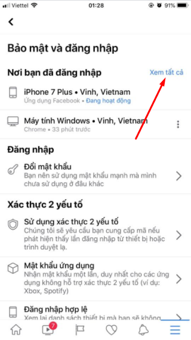

Cách đăng xuất Messenger trên điện thoại iOS & Android cực đơn giản

Ty Nguyen
CEO ❤️ AhaChat. Love babies & chatbot.
Messenger là một trong những ứng dụng hoạt động độc lập với Facebook và thông qua ứng dụng này, rất nhiều người dùng để chat với bạn bè. Tuy nhiên, Messenger lại không giống với Facebook, nó không có nút đăng xuất Messenger như đăng xuất Facebook. Điều này đôi lúc gây phiền toái cho người sử dụng bởi không biết làm cách nào để đăng xuất Messenger. Nếu bạn cũng đang thắc mắc điều đó thì đừng bỏ qua bài viết hướng dẫn bạn cách đăng xuất Messenger dưới đây nhé!
1. Cách đăng xuất Messenger trên điện thoại iOS (Iphone/ Ipad)
Để đăng xuất tài khoản Messenger trên hệ điều hành iOS, bạn cần thực hiện theo các bước sau:
Bước 1: Đầu tiên, bạn cần mở ứng dụng Facebook trên điện thoại, sau đó đăng nhập vào tài khoản Facebook của bạn.
Tại giao diện trang chủ, bạn bấm vào biểu tượng dấu 3 gạch ngang ở góc phải bên dưới màn hình điện thoại.
Bước 2: Sau khi bấm vào biểu tượng 3 gạch ngang, giao diện mới xuất hiện, bạn kéo xuống dưới bấm chọn mục Cài đặt & quyền riêng tư, tiếp đó bạn lại bấm chọn vào mục Cài đặt.
Bước 3: Tại giao diện của mục Cài đặt, bạn tìm đến mục Bảo mật và bấm chọn vào Bảo mật và đăng nhập.
Bước 4: Tiếp theo, tại mục Nơi bạn đăng nhập của giao diện bảo mật và đăng nhập, bạn bấm vào Xem tất cả.

Bước 5: Sau đó bạn tìm kiếm thiết bị nào đã và đang đăng nhập vào Messenger, bạn bấm vào biểu tượng dấu 3 chấm dọc bên cạnh rồi bấm vào Đăng xuất.
Sau khi bấm đăng xuất, như vậy là bạn đã đăng xuất Messenger thành công trên điện thoại iOS với các thao tác cực kỳ đơn giản.
2. Cách đăng xuất Messenger trên điện thoại Android
Đối với điện thoại hệ điều hành Android, bạn có 2 cách để đăng xuất Messenger trên điện thoại. Cụ thể như sau:
+ Đăng xuất Messenger bằng cách xoá dữ liệu trong phần cài đặt trên điện thoại.
Để thực hiện đăng xuất Messenger bằng cách xoá dữ liệu trong phần cài đặt thành công, đầu tiên, bạn cần phải đóng ứng dụng nếu bạn đang mở và thoát khỏi danh sách ứng dụng gần đây. Sau đó làm theo các bước hướng dẫn sau:
Bước 1: Bạn mở mục Cài đặt trên điện thoại Android của bạn.
Bước 2: Trong phần Cài đặt, bạn kéo xuống tìm mục Quản lý ứng dụng, tìm đến ứng dụng Messenger. Tiếp theo, bạn bấm vào mục Bộ nhớ lưu trữ để xoá dữ liệu Messenger.
Bước 3: Lúc này, giao diện mới xuất hiện, bạn bấm vào Xóa dữ liệu.
Bước 4: Sau khi bạn xóa dữ liệu Messenger trên máy điện thoại Android, các thông tin dữ liệu của Messenger lưu trên máy Android của bạn đã được xoá hết khi muốn vào cần phải đăng nhập lại.
Như vậy là bạn đã đăng xuất thành công Messenger bằng cách xoá dữ liệu mà không cần xoá phải ứng dụng.
+ Đăng xuất Messenger từ ứng dụng Facebook
Với cách đăng xuất Messenger từ ứng dụng Facebook thì việc thực hiện trên điện thoại Android cũng không khác so với thực hiện trên máy điện thoại iOS. Các bước hướng dẫn thực hiện như sau:
Bước 1: Bạn truy cập vào tài khoản Facebook trên điện thoại của bạn. Tại giao diện trang chủ của tài khoản Facebook sau khi đăng nhập, bạn bấm vào biểu tượng 3 dấu gạch ngang ở góc phải phía trên màn hình điện thoại của bạn.
Bước 2: Tiếp theo, bạn kéo xuống dưới tìm và bấm chọn mục Cài đặt & quyền riêng tư, sau đó bấm vào mục Cài đặt.
Bước 3: Tại giao diện của mục cài đặt, bạn tìm đến phần Bảo mật và đăng nhập. Sau khi bấm chọn vào đó, tại giao diện của mục bảo mật và đăng nhập, bạn tìm đến mục Nơi bạn đã đăng nhập và bấm vào Xem tất cả.
Bước 4: Khi bạn bấm chọn vào Xem tất cả sẽ xuất hiện 1 list danh sách những nơi mà bạn đã và đang đăng nhập, bạn tìm đến thiết bị nào đã và đang đăng nhập Messenger, bạn bấm vào dấu 3 chấm dọc ở bên cạnh, sau đó bấm Đăng xuất.
Như vậy, chỉ với vài thao tác cơ bản, bạn đã đăng xuất Messenger thành công thông qua ứng dụng Facebook trên điện thoại Android.
Bài viết trên đây đã hướng dẫn bạn cách đăng xuất Messenger đơn giản nhất trên điện thoại Android và iOS. Hy vọng với những thông tin đó đã giúp bạn biết cách đăng xuất Messenger khi cần. Trong quá trình thực hiện nếu gặp bất cứ khó khăn gì thì đừng ngần ngại để lại bình luận dưới đây, chúng tôi sẽ phản hồi bạn trong thời gian sớm nhất. Chúc bạn thực hiện thành công!